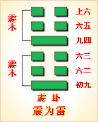

高岛易断 - 16雷地豫
高岛易断 16 雷地豫
按："豫"字从象，从牙，左旁之牙垂地，象之大者也。象性柔缓，进退多疑，以其外行安舒，一俯一仰，而不抑藏，故以安舒不抑藏为豫，遂以《豫》名卦。卦体《坤》下《震》上，《坤》下顺而载乎上，《震》上动而振乎下，盖谓扬舒于外，而不抑藏于内，是以为《豫》也。《豫》与《谦》对，《序卦》曰，"有大而能《谦》必《豫》，故受之以《豫》"，此《豫》所以次于《谦》也。
豫：利建侯行师。
▲ 甲骨文豫
《豫》，和悦也，《震》动也；《坤》，顺也，上动而下顺，故"利"。《坤》为国，《震》为侯，是以利于建侯；《坤》为业，《震》为行，是以利于行师。夫不动则不威，不顺则不利，以顺而动，所以君立而民顺，师出而有功，利莫大焉，故《传》曰"顺以动"。主万邦，集大众，非《豫》不能也。
《象传》曰：豫，刚应而志行，顺以动，豫。豫顺以动，故天地如之，而况建侯行师乎？天地以顺动，故日月不过，而四时不忒；圣人以顺动，则刑罚清而民服。豫之时义大矣哉！
卦体下《坤》上《震》，《震》雷《坤》地，有雷出地奋之象。《坤》地静也，纯阴主闭，闭极则郁结而不畅；《震》动也，阳气动而万物出，故悦。九四一阳当《坤》之交，静极而始动，闭极而始宣，不先不后，应时顺动，故曰《豫》。夫天下之事，逆理而动者，其心常劳，其事多难，惟以顺动，从容不迫，此心安和，故"刚应而志行"，全在顺以动之也。顺而动，在天则"四时不忒"，在人则动止和顺，其"建侯"也，屏藩五国，其"行师"也，吊民伐罪，皆出于豫乐之义，谓之"刚应而志行，顺以动，豫"也。盖"顺以动"三字，为此卦之德性，故"天地如之，况建侯行师乎"?"天地顺动以下，言豫之功用无比。"日月不过"者，谓日月之行度无过差；"刑罚清而民服"者，谓圣代至治之准则。狱讼衰息，民志大畏，协中而民服也。盖圣人无心，惟顺物而动，彼善则顺其善而赏之，彼恶则顺其恶而罚之，不敢稍存偏私，刑无过刑，罚无过罚，而刑罚自清。如此皆出于"顺动"之德，三才之道，万物之理，皆不过此，故曰"豫之时义大矣哉"。《彖传》前曰"顺以动"，后曰"以顺动"。"顺以动"者，就卦象之自然释之；"以顺动"者，就人事之作用而说。曰"天地"，曰"圣人"，相对而言也，后"则"字，对上文，当用故字，今曰"则"字，大有意味。"天地以顺动"者，即亘万古而无有退转，必然之定理也，以"故"字承之。《易》中单称"圣人"者，即指天子，盖必有圣人之德者，而后富有四海，尊为天子，是谓顺命。文王、周公、孔子之圣，皆不得其时，不得其位，是则圣人之在天位，有不可必然者，故后文以"则"字承之，是此篇之主眼，《易》教之本意也。故以天地日月四时为宾，以圣人为主，重在圣人一句，读者匆匆匆看过。
凡《象传》用"大矣哉"，共有十二卦，其上有曰"时义"，有曰"时用"，或单言"时"。其中曰"时义大矣哉"五卦，《豫》、《随》、《遁》、《姤》、《旅》是也，言浅旨深，欲人熟思之也。曰"时用大矣哉"三卦，《坎》、《睽》、《蹇》是也，虽皆非美事，圣人有时而用之。曰"时大矣哉"四卦，《颐》、《大过》、《解》、《革》是也，皆因大事变而警诫之。要之其义各有取也。
以此卦拟人事，此卦五柔一刚，其人必多柔少刚。柔主顺，刚主动，柔必应刚而能行，故曰"应"。夫"刚应而志行，顺以动，豫"，天地之动，日月往来，而四时乃定，圣人则之，以定刑罚，而万民乃服。人处天地之中，沐圣人之化，人而在下，无所谓建侯，凡求友亲师者类是；无所谓行师，凡祛邪嫉恶者类是，凡有所动，皆当法天地之顺，斯动无过则也。能顺天地，则天地亦顺之，使得永保其安豫；若过豫而不省，则必将为初六之"凶"，六三之"悔"，六五之"疾"，上六之"冥"，是自失其豫矣。其为豫，乃其所为忧也，必如六二之"介"，九四之"勿疑"，斯得焉。人固当顺理而动，动顺夫理，动乃无咎，所以豫也。
以此卦拟国家。《震》为动而在上，《坤》为顺而居下，上动下顺，是上行威令，下皆顺从也，故曰"主万帮，聚大众，非豫不能也"。夫天下之人不同，其心同也，天下之心不同，其理同也，己能顺理而动，则人莫不顺之。九四一阳，居执政之位，有刚明之德，威权赫赫，以统治国家，故卦中众阴皆和顺而悦服。《震》为侯，为建，《坤》为国，为臣民，为顺，即为臣民服从之象。四为成卦之主，与六五之君，阴阳相比，而辅佐之，使万民豫乐和顺。至其行政，一法天道，如寒极则温风至，暑极则凉风至，世之所好好之，世之所恶恶之，赏罚公明，毫无私意，是豫之时也。但执政负国家之重，威权独揽，未免近逼，或致动群僚之"疑"，启君心之"疾"，尾大不掉，亦可惧也。惟当尽其至诚，勿有疑虑，乃能合众力以安其上，庶几上之信任愈隆，将赏其功劳，而封建为侯，有不服王命者，即命之以征伐。上卦《震》之方伯，动而俱进，下卦《坤》之众民，悦而顺从，谓之"利建侯行师"。四体《震》，《震》为长子，故曰"建侯"；以一阳统众阴，故曰"行师"。此卦五爻以下，有《比》之众，《比》为建国亲侯，故曰"建侯"；三爻以上，有师之象，故曰"行师"。"利"字括"建侯""行师"两行，豫之时势如此。上下悦乐之余，《豫》之极，危之基也，所当反之以《谦》，一转移而天下治乱安危系焉。惟其善则归君，过则归己，利公而不专，害审而不避，是为大臣处《豫》之道，而上下交泰矣。
通观此卦，其要旨不出"顺以动"三字。凡顺之至者，不动则不悦，动而顺应，故悦。未顺则不先，既顺则不后，由气机之自然而已。豫之时心劳意足，其乐已极，处乐之极，遂至纵情逸欲，流连忘返，亦恒情所不免也。圣人忧之，故未《豫》而先者为"鸣豫"，不动者为"介"豫，坐而观者为"盱"，当豫而顺者为"由，"过豫而不忘者为"疾"，极豫而忘返者为"冥"。在初爻则戒其"穷"，在六三则警其"悔"，在六五则防其"疾"，在上六之"渝"，则危不可长，幸其终改。"鸣"、"盱"、"疾"、"冥"四者，居《豫》之咎，所谓失豫者也。惟六二之"介于石"，为能熟察忧乐治乱之机，故顺莫善于"贞"，动莫善于"由"，"贞"以待顺，"由"以行动，由未豫而豫必至，既豫而豫不忧。天地圣人之悦豫无疆者，惟其能处乎豫也。读此卦而圣人谆谆于世之意，可见矣。
按：六爻言《豫》不同。初六上六之《豫》，逸豫也；六二之《豫》，几先之豫也；六三之《豫》，犹豫也；九四之《豫》，和豫也；六五之疾，弗豫也；《彖》之言《豫》，众人和同之豫也；爻之言《豫》，各人一己之豫也。要之示悦豫之必与众同，非可自私之意也。盖人事不可无豫，人心不可有豫也。
《大象》曰：雷出地奋，豫。先王以作乐崇德，殷荐之上帝，以配祖考。
雷者，得时而奋出地上，阳气宣发，震动有声，足以鼓动天地之和，发越阴阳之气，通达和畅，《豫》之象也。故先王法震之动以作乐，为象其声以鸣盛也；先王法《坤》之顺以崇德，为明其体以报功也。盖乐之作也，近而闺门，远而邦国，显而人事，幽而鬼神，无不用之。至于荐上帝而上帝来格，配祖考而祖考来享，幽感明孚，《豫》之所以为《豫》也。故《履》为《易》中之礼，《豫》为《易》中之乐，人君克体此意，以使万民乐和，《豫》之至也。
【占】 问时运：目下如春雷发动，正得时会，万事皆吉。
○ 问商业：时当新货初到，市价飞腾，绝好机会，必得大利。
○ 问家宅：防有变动，宜礼神祭祖，以祈福佑，得安。
○ 问疾病：宜祷。
○ 问战征：雷厉风行，必胜之兆。
○ 问功名：所谓平地一声雷，指日高升之象。
○ 问失物：自然出现。
○ 问六甲：生男。
高岛易断 初六：鸣豫，凶。
《象传》曰：初六鸣豫，志穷，凶也。
"鸣豫"者，自鸣得意之谓，悦豫之情动于心，而发于声者也。初爻阴柔不才，居最下之位，与四相应，恃其爱眷，心满意溢，不胜其悦，应而自鸣，其凶可知也，故曰"鸣豫，凶"。《象传》曰"志穷，凶也"。"穷"谓满极，初才得志，便为满极，盖时方来而志已先穷矣，故凶。一说穷在凶下，谓志凶穷也。
按：《豫》初六，与《谦》上六相反，《谦》上曰"鸣谦"，应九三而鸣也；《豫》初曰"鸣豫"，应九四而鸣也。鸣人之谦吉，鸣己之豫凶，故曰："《谦》可鸣。《豫》不可鸣也。"
【占】 问时运：初运颇佳，但一经得意，使尔夸张，以致穷也。
○ 问商业：初次必得利，不可过贪。
○ 问家宅：恐鸟啼猿啸，致有怪异之惊，凶。
○ 问疾病：不利。
○ 问讼事：鸣冤不直，宜自罢讼。
○ 问失物：不得。
【例】 余一日赴横滨访亲友某氏，客有先在者，求余一占，筮得《豫》之《震》。
断曰：此卦九四一阳，得时与位，威权赫赫，上下五阴皆从之。今足下得初爻，四爻阴阳相应，有大受爱顾之象。足下得其爱顾，藉其权势，颇有扬扬自得之意，谓之"鸣豫，凶"。占筮如此，劝足下宜顾身慎行。客怫然而去。
客归后，主人告余曰，彼以其女为某贵显之妾，时时出入其邸，卑鄙谄谀，无所不至。时或假贵显手书，历赴诸外县，以营私利。又临豪商等集会宴席，举动效如贵显亲族，诳惑俗人。今君占断，道破小人心事，使彼不堪惭愧而去。
高岛易断 六二：介于石，不终日，贞吉。
《象传》曰：不终日，贞吉，以中正也。
"介于石"者，谓操守坚固，而不可移动也。夫逸豫之道，恣则失正，故《豫》之诸爻，多不得正，惟此爻以中正居阴，其与九四之刚，非应非比，有自守独立之操，其节之介，犹石之坚也。夫人之处豫也，或洋洋而自得，或恋恋而不舍，或昏迷而不悟，是皆失其正中矣，遂致豫方来而祸即随之，世之不知自守者，往往如此。六二独节操坚固，不为外物所动，知豫乐之不可恋，而去之不待终日，其察理甚明，其操身甚固，其审几甚决，其避患甚速，故曰"介于石，不终日，贞吉"。"介"者，坚确不拔之谓，所谓"不以三公易其介"者是也。惟其能介，是以中正也，《象传》曰"以中正也"；惟"以中正"，故能辨之明，知之速也。按此爻互卦为艮，《艮》为石，故有"介于石"之象。
【占】 问时运：其人品行高尚，不随世为隆汙，吉。
○ 问商业：能决定己志，不为奸商摇惑，贩运快速，获利。
○ 问家宅：主家者宜严正持之，凡非人来往，速宜斥绝。吉。
○ 问战征：所谓守之如山，发之如火，能审机也。
○ 问疾病：新疾即愈，夙疾即亡，终日间也。
○ 问六甲：生女，即产。
【例】 明治二十二年，某局属官某氏来访，曰：余自明治四年创局之始，奉职一等属，尔来十八年，日夜黾勉，当事务多端之冲，未尝少怠，足下之所知也。部下新任者，多升上任，今日居我上者，大概昔日之部下也。凡所升迁，亦非有过人之学问，余甚不慊于意，本欲辞职，犹恐别无位置，是以郁郁居此。请为一筮，以占后来气运。筮得《豫》之《解》。
断曰：此卦九四一阳，专擅威权，五阴不得不应之。今占得二爻，与九四非应非比，故于足下眷顾独薄。在足下品行中正，不事谄媚，惟以坚守职务为事，确乎不拔，如石之介，凡非分之事，惟恐浼焉，避之甚速，故曰"介于石，不终日，贞吉"。然自二爻进之四爻，气运一变，三年后，必可升进。
后至明治二十四年，此人果升高等官。
高岛易断 六三：盱豫，悔，迟有悔。
《象传》曰："盱豫有悔，位不当也。
"盱"者，为张目企望之象，譬如见乌之飞，仰瞻太空，见鱼之泳，俯眄深渊，不胜眷恋，故曰"盱豫"。六三阴居阳位，不中不正，其所盱者，盖上视九四之权势，而欲趋附之也。九四为一卦之主，居大臣之位，独擅威福，众阴皆归附之，六三是以惟盱瞻视，欲冀攀援，以固豫悦，谓之"盱豫"。九四以其窥探窃视，不得中正，为所鄙弃，是以有悔也。既知其悔，当翻然立改，效六二之介，决意远避，不俟终日，悔复何有？若一念以为悔，一念以为豫，迟疑不决，流连不返，悔必难免矣，故曰"悔，迟有悔"。"迟"之一字，可谓当头一棒，提醒昏昏，教其及早审悟也，最当玩味。《象传》曰"位不当也"，谓其柔居阳位，优柔不决，不当其位也。此爻变则为《巽》为不果，故知悔而犹不改，有迟疑不决之象。
【占】 问时运：目下运非不佳，在自己作为不正，是以有悔。
○ 问商业：能窥探商情，为商家之能事，然一得消息，卖买宜决，若一迟疑，便落人后。
○ 问家宅：须防窃盗，宜速警备。
○ 问失物：速寻则得，迟则无矣。
○ 问讼事：宜速了结。
【例】 某县官吏，携友人介书来访，请占气运。筮得《豫》之《小过》。
断曰：此卦九四一阳得时，上下五阴皆归应之，足下占得三爻，与四爻阴阳亲比，可知长官意气相投。然在他人见之，或未免有阿谀长官，假弄威福之嫌。今后宜注意，毋贻后日之悔。后闻长官转任他县，此人请附骥尾，其事不成，遂辞其职。
高岛易断 九四：由豫，大有得。勿疑，朋盍簪
［77］
。
《象传》曰：由豫，大有得，志大行也。
九四以一刚统率众阴，为一卦之主，凡众阴之所豫，皆由九四之豫而为《豫》，故曰"由豫"。四近五，居大臣之位，承柔弱之君，负天下之重，包容诸柔，独得倚任，任大责重，故曰"大有得"也。但当此信任过重，易致招疑，惟能开诚布公，自然无复疑虑矣。"勿疑"，乃能率众柔以奉上，犹如簪之贯众发而不乱也。"盍"，合也；"朋"，即众柔也。四刚而位居阴，犹得与诸柔相类为朋，故曰"勿疑，朋盍簪"。夫疑则生隙，隙则生忌，忌则众情离散，百事丛脞，虽有安豫之鸿业，必不能得其终也，故戒以"勿疑"。斯猜疑悉绝，上下同心，秉至诚以图事，合群力以从公，众贤汇萃，德泽宏施，足以成天下之豫者，斯之谓欤？《象传》曰"志大行也"，即所谓得志则泽加于民，功施于后。大道之行，可由豫而致也，庶乎交泰之道矣。此卦自初爻观之，为权臣，其豫者逸豫也；自四爻观之，为任政之贤臣，其豫者和豫也。《易》道之变动不居如此。
【占】 问时运：目下正大运方通。
○ 问商业：会萃众货，大得利也。
○ 问家宅：门庭豫顺，得财得福，大有之家。
○ 问功名：即卜弹冠之庆。
○ 问讼事：由此罢讼，两造豫悦。
○ 问行人：必主满载归来。
○ 问出行：由此前行，一路顺风，大得喜悦，可"勿疑"也。
○ 问六甲：生男，易长易成，且主贵。
○ 问失物：即得。
【例】 一日缙绅某来，请占某贵显气运，筮得《豫》之《坤》。
断曰：此卦春雷得气，奋出地上，有扫除积阴，启发阳和之象。拟之国家，必是祛谗进贤，能致太平之硕辅也。此爻九四一阳，居执政之大位，负国之重任，上承君德，下集群才，斯得大行其志，以启豫顺之休也。今占某贵显气运，得此爻，在某贵显，刚毅有为，德望夙著，固不待言，惟爻辞"勿疑"二字，最当审慎。盖一有疑心，则上下猜忌，庶政丛脞，必不能臻太平之治，故曰"勿疑，朋盍簪"。是某贵显所宜注意也。
缙绅闻之，甚感《易》理精切，曰：吾他日当转语诸某贵显。
【例】 明治二十八年四月九日，占我国与清国和议之谈判，筮得《豫》之《坤》。
此卦雷出地奋，有威武和乐之象。今占得四爻，爻辞曰"由豫，大有得"，盖谓两国和议，成后大得有为，豫顺之休，由此来也。又曰"勿疑，朋盍簪"，谓从此两无猜疑，如唇依齿，并将合宇内友邦而同欢，犹簪之贯万缕之发而为一也。和议之成，可预决也。四月十七日，果议和约成。
此卦《大象》曰："先王以作乐崇德，殷荐之上帝，以配祖考。"曰"上帝"，曰"祖考"者，即伊势大庙以下历代之皇灵也。
高岛易断 六五：贞疾，恒不死。
《象传》曰：六五贞疾，乘刚也；恒不死，中未亡也。
"贞疾"者，痼疾，谓不可愈之疾也。上下耽逸乐，即"贞疾"之症。此爻柔中而居尊位，信任九四，九四阳刚得权，众皆归之，六五柔弱之君，受制于专权之臣，欲豫而不能自由，战兢恐惧，中心凛凛，常如痼疾之在身，故曰"贞疾"。疾者豫之反也，《书·金滕》曰，"王有疾，不豫"是也。顾六五虽阴柔，其得君位者，贞也，其受制于下者，疾也，虽失权，其位未亡，故曰"恒不死"。《孝经》曰，"天子有诤臣七人，虽无道，不失其天下"，此之谓也。夫升平之久，人主恒耽逸豫，非以刚暴失势，必以柔懦失权。势孤于上，权移于下，虽未遽亡，而国事日非，为人君者，安可不戒哉！《象传》曰"中未亡也"，盖为四所逼，心恒有疾，幸而得中，故未亡，然曰"未亡"，亦几几乎将至于亡矣，危矣哉！
按：六二与六五，并贞者也。贞者不志于利，故不言豫，然其所以贞不同，故六二得吉，六五得疾。六二本不屑从四，可则进，否则退，故吉；六五以阴居阳，力不能以制四，而心甚疑忌之，故其贞适足为疾而已。贞虽为疾，其中之所守未亡，故"恒不死"，可知居贞之可恃也。
【占】 问时运：知其人本尊贵，因素性柔弱，不能自振。
○ 问商业：其基业甚好，因用人不当，钱财落他人之手，几致亏耗。
○ 问家宅：恐被借居者侵占，业主反不得自主。
○ 问战征：以偏将擅权，主帅失威，虽未丧师，亦幸免也。
○ 问疾病：是带病延年之症。
○ 问六甲：生男，必有病。
○ 问失物：可得。
【例】 相识之富豪某，请占其气运，筮得《豫》之《萃》。
断曰：此卦就一家而论，有家产殷富之象。九四一阳擅权，上下五阴皆应之，如一家之中，旧管家统辖家政，主人居虚位而已。今足下为海内屈指富豪，承累世之旧业，专任一能事管家，统辖事务，主人不得自主，而反受其所制，虽豫乐而不能自由，其状恰如宿疾在身，心甚怏快。幸守此祖宗遗规，不致陨坠，谓之"贞疾，恒不死"。
【例】 明治二十八年十月以来，余横滨本宅侍女，年四十五，罹疾几至危笃，医师多言不治。筮得《豫》之《萃》。
断曰：《豫》者雷出地奋之象，在人为得春阳之气，精神尚能透发，未至衰亡。此疾虽危重，尚不至死。但快愈之后，不能强健如故，犹可延其余喘也，谓之"贞疾恒不死，中未亡也"。后果得快复，今（三十二年）尚存也。
高岛易断 上六：冥豫。成有渝，无咎
《象传》曰：冥豫在上，何可长也。
"冥豫"者，昏冥于豫，而不知返者也。此爻以阴柔之性，居豫乐之极，纵欲而不顾，极乐而无厌，故谓之"冥豫"。上六居《豫》之终，在卦之上，纵情逸欲，不觉其非，如入幽冥之室。下卦《坤》，《坤》为冥，是过顺之咎也；上卦《震》，震则动，动则变，变则渝，是以有"渝，无咎"。凡人之溺情私欲者，亦苦于不知改变耳。此爻有雷厉之性，虽昏迷既成，一旦阳刚发动，便能改志变行，复归正道，夫复何咎？《象传》曰，"冥豫在上，何可长也，"示逸豫之不可长，以劝人之反省自新也。故爻辞不责其"冥"之凶，而反称其"渝"之"无咎"，意深哉！此爻变则为《晋》，则无冥暗之咎。凡《易》曰"渝"者，当以变卦观之也。
【占】 问时运：目下歹运已极，好运将来，翻然振作，大有可为。
○ 问商业：宜作变计，改旧从新，必得利益。
○ 问家宅：老宅不利，或迁居，或改造，吉。
○ 问战征：宜别遣主帅，改旗易辙，乃可得胜；或更就别路进兵。
○ 问讼事：宜罢讼和好，无咎。
○ 问六甲：逾月可产，得女。
【例】 友人某来谓曰：现今商事繁忙之时，别有见机，着手一事，请占其成否？筮得《豫》之《晋》。
断曰："冥豫"者，昏冥于豫，是所谓沉溺而不悟者也。在商业上，是妄想图利，而不知其害也。急宜变志，斯可免咎。爻象如是，当知所戒。
某闻此言，大有所感，返守旧业，免致破产。
周易 - 16雷地豫
周易第16卦_豫卦(雷地豫)_震上坤下
|  |

|

|

|
| 本卦 | 互卦 | 错卦 | 综卦 |
周易第十六卦详解
豫卦原文
豫。利建侯行师。
象曰：雷出地奋，豫。先王以作乐崇德，殷荐之上帝，以配祖考。
白话文解释
豫卦：有利于封侯建国，出兵打仗。
《象辞》说：本卦上卦为震，震为雷，下卦为坤，坤为地。春雷轰鸣，大地震动，催发万物，这是豫卦的卦象。先王观此卦象，取法于声满大地的雷鸣，制作音乐，歌功颂德，光荣归于上帝，光荣归于祖考。
《断易天机》解
豫卦震上坤下，为震宫初世卦。雷出地奋，象征春雷使万物苏醒，君王之威行于子民，因此有利于建候、行师。
北宋易学家邵雍解
雷出地上，悦服快乐；安乐之中，预防忧患。
得此卦者，顺天应时，事事吉祥，可得长辈之助，但须防色难，切不可沉迷于声色欢场之中。
台湾国学大儒傅佩荣解
时运：春雷发动，诸事吉祥。
财运：新货上市，必有大利。
家宅：祈神祭祖，可保平安。
身体：祷告静心。
传统解卦
这个卦是异卦（下坤上震）相叠，坤为地，为顺；震为雷，为动。雷依时出，预示大地回春。因顺而动，和乐之源。此卦与谦卦互为综卦，交互作用。
大象：雷出于地上，阳气奋发，万物欣欣向荣。
运势：如意安泰，可得长辈扶助，但须防色难，凡事应有备而战。
事业：十分顺利，事业可以获得成功，但必须符合实际，顺应潮流，且得自己努力奋斗，树立远大目光，尤其不可因事业的顺利而放松谨慎小心的态度，陷于懒散享乐。否则，必将后悔莫及。
经商：时运已到，应大胆行动，即使发生挫折，也可以很快化险为夷。应加强同他人的合作，开诚布公，共同开发事业。
求名：天资聪颖，如能坚守正直的品德，严格要求自己，努力上进，不因有成绩骄傲满足，停止前进，而是兢兢业业，不惰不怠，必定可以有重大成功。
婚恋：十分顺利，一生顺利和吉祥，但万不可掉以轻心，更不可玩弄感情，否则将会出现悲剧。
决策：一生顺利，不会出现大的波折，容易比较顺利得到自己应该得到的。但关键在于自己的努力和奋斗，不得耽于安乐，不可玩物丧志。豁达、大度更有利于健康和长寿。一旦遇到意外的灾害，只要时时严格要求自己，坚守纯正，乐不忘忧，居安思危，必可转危为安。
第十六卦的哲学含义
雷地豫卦，由坤卦和震卦组成，下坤上震，坤为地，为顺；震为雷，为动。雷依时出，预示大地回春。
从卦象上看，坤为地在下，是万物生长之处，震为雷在上，雷在沉寂的大地上发生轰鸣，表明春天来了，给万物带来了生机，所以形成了万物合乐的局面。震为动在上，坤为顺在下，说明震在前动，坤在后顺其意志而行，从而显出彼此的和好，其乐无穷的气氛。
豫卦位于谦卦之后，《序卦》之中这样说道："有大而能谦必豫，故受之以豫。"在此之前是大有卦与谦卦，接着一定是代表愉悦的豫卦。豫卦与谦卦互为正覆关系，"豫"有愉悦之意，但也有居安思危的预备之意。
《象》中这样解释豫卦：雷出地奋，豫。先以作乐崇德，殷荐之上帝，以配祖考。
《象》中指出：雷从地下出来，万物振作，这就是豫卦。古代君王学习这种精神，制作音乐来推崇道德，并以隆重的仪式向上帝祭祀，连带也向祖先祭祀。
雷地豫卦启示了顺时依势的道理，属于中中卦。《象》中这样来断此卦：太公插下杏黄旗，收妖为徒归西歧，自此青龙得了位，一旦谋望百事宜。
豫卦之象:有两重山，为出字；官人在中，出求贵义；一鹿一马，指禄马运动；金钱数锭一堆者，乃厚获钱钞无数，占者得之求才遇贵吉利之兆。凤凰生雏之卦，万物发生之象。
周易第十六卦初九爻详解
初六爻辞
初六。鸣豫，凶。
象曰：初六鸣豫，志穷凶也。
白话文解释
初六：津津乐道于荒淫享乐，凶险。
《象辞》说：
初六爻辞
讲，津津乐道于荒淫享乐，其人意志必消退，身名必败裂。
北宋易学家邵雍解
凶：得此爻者，不顺，有口舌之争，前进有阻力。做官的不要得意忘形，须谨慎，以免生祸。读书人则可能会一鸣惊人。
台湾国学大儒傅佩荣解
时运：得意忘形，致遭困境。
财运：初可得利，切忌过贪。
家宅：怪异之惊，应防凶险。
身体：颇为不利。
初六变卦

初六爻动变得周易第51卦：震为雷。这个卦是同卦（下震上震）相叠。震为雷，两震相叠，反响巨大，可消除沉闷之气，亨通畅达。平日应居安思危，才能遇到突发事件因应裕如。
初九爻的哲学含义
豫卦第一爻，爻辞：初六：鸣豫，凶。
从卦像上看，初六位于豫卦的最底端，没有什么地位，但是因为其能与九四相应，有这个卦中唯一的领导的"关照"，所以心生得意。
象曰："初六鸣豫"，志穷凶也。
这就是说，初六在最低位又德行修养不够，却自鸣得意，会导致凶险。
初六爻阴爻居于阳位，并且与九四阳爻相应，由于豫卦的背景是和平年代的娱乐，所以初六与九四有贪图享乐的含义。谦卦的初六爻辞为"鸣谦"，前面已经讲过了，是宣扬谦虚之德。而这里是"鸣豫"，即宣扬享乐之意。其"鸣"的含意与谦卦所述的意思相同。所以此处的"鸣豫"中初六与九四互相应和、共鸣一种享乐的思想。和平年代人们追求享乐本无可厚非，但是如果一味贪求，享乐过分，则会有凶险。所以初六的爻辞为凶险。这就好比李隆基和杨玉环纵情享乐的时候，而等待他们的却是一个盛世的结束，叛乱的开始。所以说和平年代，应当提高精神文明建设，以杜绝人们的奢欲。
周易第十六卦九二爻详解
六二爻辞
六二。介于石，不终日，贞吉。
象曰：不终日，贞吉，以中正也。
白话文解释
六二：夹在石缝中，幸而不到一天就被人救出。卜问得吉兆。
《象辞》说：磨难不足一日即解除，卜问得吉兆，因为六二之爻居下卦中位，像人得中正之道。
北宋易学家邵雍解
吉：得此爻者，会获利。做官的宜急流勇退，读书人有成名之机。
台湾国学大儒傅佩荣解
时运：人品高尚，不逐浮华。
财运：自定其志，快速获利。
家宅：严正持家，拒斥小人。
身体：新病可愈，宿疾即忘。
六二变卦

六二爻动变得周易第35卦：火地晋。这个卦是异卦（下坤上离）相叠。离为日，为光明；坤为地。太阳高悬，普照大地，大地卑顺，万物生长，光明磊落，柔进上行，喻事业蒸蒸日上。
九二爻
的哲学含义
占得此爻者，你要保持清醒，不要在娱乐中放纵自己而忘了该办的正事。这样，你就能做到享乐、事业两不误。
在这个方面有一个反面的例子，就是刘备的儿子刘禅。刘禅庸碌无能，贪图享乐，沉溺其中。在位前期，主要依靠诸葛亮来治理国政。自诸葛亮死后，刘禅更加昏庸无道，贪图享乐，不理朝政，宦官黄皓乘机取宠弄权，结党营私，朝政日非。魏国来攻，刘禅反缚自己双手，出城投降。在魏国时还是沉溺于玩乐之中，乐不思蜀。
占得此爻者，要深知欢乐必须适中有度，并能固守贞正之道，这样才会有吉祥的结果。
周易第十六卦九三爻详解详解
六三爻辞
六三。盱豫，悔。 迟有悔。
象曰：盱豫有悔，位不当也。
白话文解释
六三：懒散游乐，将招致后悔；再加上懈怠大意，那就后悔莫及。
《象辞》说：懒散游乐，将招致后悔，因为六三之爻居于阳位，是处置不当，像人之行事与所处地位不相称。
北宋易学家邵雍解
凶：得此爻者，投机取巧，是非不一。
台湾国学大儒傅佩荣解
时运：本身不正，因而有悔。
财运：稍纵即逝，快速得利。
家宅：速防窃盗。
身体：立即就医。
六三变卦
六三爻动变得周易第24卦：地雷复。这个卦是异卦（下震上坤）相叠。震为雷、为动；坤为地、为静。动则常静，静则常动。一阳初动，万物未形，五阴沉沦，万物倒伏，动极而静，静极复动。万物周而复始，形成巨大的自然规律。
九三爻
的哲学含义
豫卦第三爻，爻辞：六三：盱豫悔；迟有悔。
从卦象上看，整个卦之中九四居于主爻，是全卦之中的领导。六三仰目上望，企图巴结九四。可是六三属于阴爻居于阳位，不得势，位不当，所以无法如愿，结果懊恼。占得此爻者，不必去巴结讨好别人，以求安乐，这样会难以如愿的，必然心生后悔。
从卦象上看，六三一爻在六二、六三、九四组成的互艮中，比六二更接近艮的上爻，艮为止的意思，所以六三不是"不终日"而是"迟"，迟迟不能摆脱诱惑，迟迟不能去做正事，结果必然后悔。
占得此爻者，已经意识到了自己这样耽于安乐是不对的，但是却意志薄弱，无法摆脱诱惑，无法立刻去做正事，这样拖下去，早晚会后悔的。
经文意思是：小人揭上以逸乐惑主，会有忧悔。悔恨太迟更要后悔。象辞意思是：小人媚上以逸乐惑主的忧悔，是因为六三爻阴居阳位的缘故。
周易第十六卦九四爻详解详解
九四爻辞
九四。由豫，大有得，勿疑，朋盍簪。
象曰：由豫大有得。志大行也。
白话文解释
九四：田猎取乐，大获鸟兽。筮遇此爻，勿疑友人多嘴而谗己。
《象辞》说：田猎取乐，大获鸟兽，说明猎获甚多，如愿以偿。
北宋易学家邵雍解
吉：得此爻者，进取成名，经营获利。做官的会得到知己，进取有望。
台湾国学大儒傅佩荣解
时运：大运正行，不必担心。
财运：众货聚集，大有利市。
家宅：得福有财。
身体：不必担心。
九四变卦

九四爻动变得周易第12卦：天地否。这个卦是异卦（下坤上乾）相叠，其结构同泰卦相反，系阴阳反背，相互不交，阳气上升，阴气下降，天地不交，万物不通。它们彼此为"综卦"，表明泰极而否，否极泰来，互为因果。
九四爻
的哲学含义
豫卦第四爻，爻辞：九四：由豫，大有得；勿疑，朋盍簪。
在整个豫卦之中，只有九四这一爻是阳爻。众阴归附所从，朋友前来簪聚，他给人们带来了生机和欢乐。可是，在卦之中九五是君主之位，九四是阳爻居阴位，所以要对九五至诚相待，以免引起怀疑。这样才能上下信服，出现一派合乐的场面。
在这方面有一个典型的例子，便是诸葛亮。刘备死后，他辅佐刘禅，兢兢业业，对刘禅表现出臣子对天子的尊重。诸葛亮既得到了士兵的拥护，也得到了刘禅的信任。占得此爻者，既要注意礼贤下士，又要注意尊重领导，这样才能吉祥。
九四爻是卦中唯一的阳爻，他可以得到众阴爻的应和。所以喜乐自来，会有大的收获。"朋盍簪"是什么意思呢？"朋"便是朋友；"盖"便是相合；"簪"就是聚拢头发用的发针，古代男人也留长发，所以男人与女人都用簪子聚拢头发。这三个合起来便是说将朋友聚集起来，就像用簪子聚拢头发一样。从卦象上看，豫卦九四爻就像一根发簪，其他阴爻则像盘在一起的头发，所以九四的爻辞有"朋盍簪"的说法。众阴爻应和、归顺于九四阳爻，所以会有大的收获，可以得志。
周易第十六卦九五爻详解详解
六五爻辞
六五。贞疾，恒不死。
象曰：六五贞疾，乘刚也。恒不死，中未亡也。
白话文解释
六五：卜问疾病，长时间内不会死去。
《象辞》说：六五爻辞讲患病，因为六五阴爻居于九四阳爻之上，犯了柔乘刚之象。"长时间不会死去"，因为六五之爻居于上卦中位，正当不死之象。
北宋易学家邵雍解
凶：得此爻者，多心事，有灾难，或有腹疾。做官的多洋洋得意，持恩固宠，难免有失。
台湾国学大儒傅佩荣解
时运：性格柔弱，难以振作。
财运：用人不当，致生损失。
家宅：恐被侵占。
身体：带病延年。
六五变卦

六五爻动变得周易第45卦：泽地萃。这个卦是异卦（下坤上兑）相叠。坤为地、为顺；兑为泽、为水。泽泛滥淹没大地，人众多相互斗争，危机必四伏，务必顺天任贤，未雨绸缪，柔顺谦虚，不可急躁。
九五爻
的哲学含义
豫卦第五爻，爻辞：六五：贞疾，恒不死。
从卦象上看，六五这一爻本来是属于君主之位，可是却是阴爻，而且下面九四是全卦之中唯一的阳爻。六五不得位，势力不如九四，但是因为居中，处于君主这一位置上，所以平安无事。
六五爻得了病，这是怎么回事呢?对此，虞翻的解释是："坎为疾，坤为死，震为反生，位在震中，与坤体绝，故'贞疾，恒不死'也。"意思是说，豫卦上互卦为坎，坎含有疾病的意思，所以六五处于疾病的边缘。又由于坤为归藏代表死，可是豫卦的上卦为震，与坤没有一点关系，震有起死回生的含义，六五处于震卦的中位，所以他患有疾病，但不会因此而死亡。但六五得的是什么病呢？是心病。为什么这样说呢？因为坎便代表心病。六五的心病便是对九四的心病。打个比方说，九四是一个男人，众阴爻是他的五个妻子，有一个妻子在家里处干领导地位，凌驾在丈夫之上，这个妻子便是六五爻，为什么六五会有心病呢？因为丈夫更爱六二与六三这两个妻子，有权势的六五自然会吃醋而生心病了。可是由于六五居中，能够做到以中庸之道持家，所以她尽管受了心灵的伤害，但还不至干因此而丢掉性命。不过这种醋劲也使她徘徊在生与死的边缘。若是占问身体健康状况，则意味着会生病，但病小致死。
周易第十六卦上九爻详解详解
上六爻辞
上六。冥豫，成有渝，无咎。
象曰：冥豫在上，何可长也。
白话文解释
上六：末日将至尚且享乐，已成之事也将毁败。
《象辞》说：末日将至尚且享乐，以此居上位，怎能长久。
北宋易学家邵雍解
平：得此爻者，因为心气太高，会有诉争之扰，但若能改过自新，心态平和，则不会有过失。做官的会有贪污之嫌，须明哲保身。
台湾国学大儒傅佩荣解
时运：冬去春来，奋发有为。
财运：改旧从新，将可获利。
家宅：迁居改造为宜。
身体：应有转机。
上六变卦
上六爻动变得周易第31卦：泽山咸。这个卦是异卦（下艮上兑）相叠。艮为山；泽为水。兑柔在上，艮刚在下，水向下渗，柔上而刚下，交相感应。感则成。
上九爻
的哲学含义
豫卦第六爻，爻辞：上六：冥豫成，有渝无咎。
豫卦是愉悦之意，上六是整个卦之中最后一爻，意指愉悦到了极点，有些执迷不悟了。但是因为本卦已到头，再无去路，终究会有变化，如此就可以"无咎"。
上六沉溺于喜乐昏了头，可是能够及早地发现自己的过失，及早地改正，所以不会有大的过失。因为喜乐一过度，喜乐的害处马上就要显出来了，也就是说接下来也就喜乐不成了。不能拥有喜乐了，可是能够认识到喜乐的害处，当然不会再有过失了。
豫卦第六爻，爻辞：上六：冥豫成，有渝无咎。占得此爻者，要反省一下自己，是否因贪玩而耽误了正事，是否养成了纵情玩乐的恶习，使自己陷入了危机之中。如果这样就要及时改正，还是为时不晚。